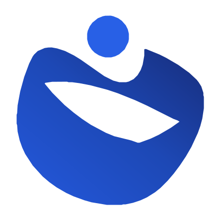

Menunggu koneksiTidak dapat terhubung
Pundi butuh internet untuk memuat data keuanganmu. Periksa Wi‑Fi atau data seluler — kami akan mencoba lagi otomatis saat koneksi kembali.
Masih belum tersambung. Coba lagi sebentar lagi.

Menunggu koneksiPundi butuh internet untuk memuat data keuanganmu. Periksa Wi‑Fi atau data seluler — kami akan mencoba lagi otomatis saat koneksi kembali.
Masih belum tersambung. Coba lagi sebentar lagi.